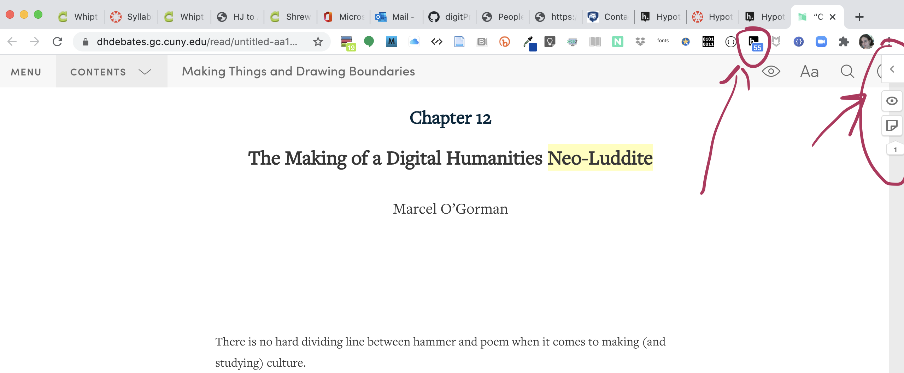

This very first assignment, with the start of the semester, involves us writing online annotations as a private class group on a cluster of well-known readings about Digital Humanities and computer coder culture. We will work with the free online annotation software, Hypothes.is, which will involve some quick initial configuration, which we will do together in class on day 1 (but you may do on your own if you missed it).
bookmarklet. Make sure you can access the Hypothes.is extension or bookmarklet in your browser and can see how it opens.
Here are some screen captures to be sure you are opening Hypothes.is on your browser and working within our class group. These are taken from my Chrome web browser.
Here is what the Hypothes.is extension looks like when installed on the Chrome browser:
Here is what you should see if you have succeeded in joining our Hypothes.is class group:

As you read, notice when you pause on anything unfamiliar, or maybe slightly familiar or interesting. Look for more information about it to supply an annotation. Write annotations with Hypothes.is to help identify people, provide location markers (as in map references), provide information about events, and to try to make something unfamiliar or little known to become vivid and easy to recognize or remember. You may also write an annotation to point out something worth thinking about or discussing more, or that strikes you as related to something we know about in another way, or something that recently happened, or that is relevant right now. Your annotations can provide information as well as commentary.
Try including images and multimedia with your annotations (learn how this works in Hypothes.is annotation tool: you link directly to media on the public web).
Raise questions and respond to others' annotations.
Try to provide three or four content-rich annotations per assigned reading. You may write more!
I will be evaluating your annotations for:
Your annotations in the first two weeks of our course are part of the first graded digital conversation assignment in this course. Your annotations may also serve as an experiment in expanding the frame of reference for the readings, and may serve as the basis for our class's next digital projects.